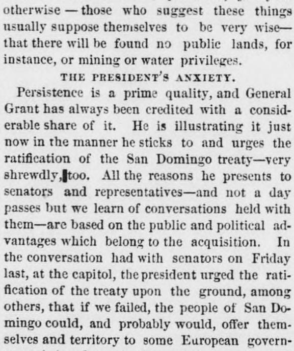
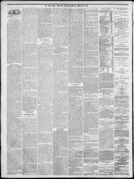

See the full pageVer la página completaIn the conversation had with senators on Friday last, at theEn la conversación sostenida con senadores el viernes pasado, en la
In a conversation with senators on Friday, the President urged the ratification of the treaty to acquire San Domingo, warning that otherwise the territory might be offered to a European government, thereby undermining the Monroe Doctrine. He presented evidence that the majority of the people voted for annexation and that insurrectionary leaders, whose rebellion lacked strength after being cut off from Hayti, were not inherently opposed to it. Furthermore, the President expressed his belief that acquiring San Domingo would immediately benefit U.S. commerce and the Darien canal, while potentially leading to broader territorial control of the Gulf islands.En conferencia con senadores el viernes, el presidente encareció la pronta ratificación del tratado para incorporar a Santo Domingo, advirtiendo de que, en caso contrario, dicho territorio podría ser brindado a una potencia europea en quebranto de la doctrina Monroe. Exhibió pruebas de que la generalidad de la ciudadanía sufragó a favor de la anexión y de que los caudillos insurrectos, cuyas fuerzas languidecían al quedar desasistidos desde Haití, no repudiaban la medida en esencia. Manifestó asimismo su convicción de que la anexión de Santo Domingo acarrearía inmediatos provechos al tráfico marítimo estadounidense y al proyectado canal del Darién, franquando de paso el control de las islas del Golfo.
FULL TEXT:TRADUCCIÓN:
THE PRESIDENT'S ANXIETY.LA ANSIEDAD DEL PRESIDENTE.
Persistence is a prime quality, and General Grant has always been credited with a considerable share of it. He is illustrating it just now in the manner he sticks to and urges the ratification of the San Domingo treaty—very shrewdly, too. All the reasons he presents to senators and representatives—and not a day passes but we learn of conversations held with them—are based on the public and political advantages which belong to the acquisition. In the conversation had with senators on Friday last, at the capitol, the president urged the ratification of the treaty upon the ground, among others, that if we failed, the people of San Domingo could, and probably would, offer themselves and territory to some European government, being determined to obtain security and prosperity. The president asked how, in that case, could we make the Monroe doctrine operative. He presented evidence and reports from San Domingo which went toward establishing the fact that the great body of the people had voted for annexation. That the insurrectionary leaders were not opposed per se to such annexation was shown by official copies of documents in the Dominican records, proving that Cabral and others had made similar advances to those carried out by Baez. It is not the doing, but the management that they fight. The insurrection had but little strength, being cut off by Admiral Poor's remonstrance to the Saget government from such supplies as they had expected from Hayti.La persistencia es una cualidad primordial, y al general Grant siempre se le ha acreditado una considerable parte de ella. La está ilustrando justo ahora en la manera en que se aferra e insta a la ratificación del tratado de Santo Domingo—muy astutamente, además. Todas las razones que presenta a senadores y representantes—y no pasa un día sin que sepamos de conversaciones sostenidas con ellos—se basan en las ventajas públicas y políticas que pertenecen a la adquisición. En la conversación sostenida con senadores el viernes pasado, en el capitolio, el presidente instó a la ratificación del tratado sobre la base, entre otras, de que si fracasábamos, el pueblo de Santo Domingo podría, y probablemente lo haría, ofrecerse a sí mismo y su territorio a algún gobierno europeo, estando resuelto a obtener seguridad y prosperidad. El presidente preguntó cómo, en ese caso, podríamos hacer operativa la doctrina Monroe. Presentó evidencias e informes de Santo Domingo que tendían a establecer el hecho de que el gran cuerpo del pueblo había votado por la anexión. Que los jefes insurreccionales no se oponían per se a tal anexión fue mostrado por copias oficiales de documentos en los registros dominicanos, que prueban que Cabral y otros habían hecho avances similares a los llevados a cabo por Báez. No es el hecho, sino el manejo, lo que combaten. La insurrección tenía poca fuerza, habiendo sido privada por la protesta del almirante Poor al gobierno de Saget de los suministros que habían esperado de Haití.
Worcester Daily Spy. Worcester [Mass.], March 24, 1870.
See the original at the Library of CongressVer el original en la Biblioteca del Congreso
Published by: John Milton EarlePublicado por: John Milton Earle
Edition: Edition 1Edición: edición 1
Page: 2Página: 2
Frequency: daily (1850–1888)Frecuencia: diario (1850–1888)
Collection: Chronicling America, Library of CongressColección: Chronicling America, de la Biblioteca del Congreso
LCCN: sn83021205LCCN: sn83021205
ISSN: 2996-0681ISSN: 2996-0681
OCLC: 9954250OCLC: 9954250
Call Number: Newspaper 8397Signatura (Call Number): Newspaper 8397
Rights: public domain, according to the Library of CongressDerechos: dominio público, según la Biblioteca del Congreso